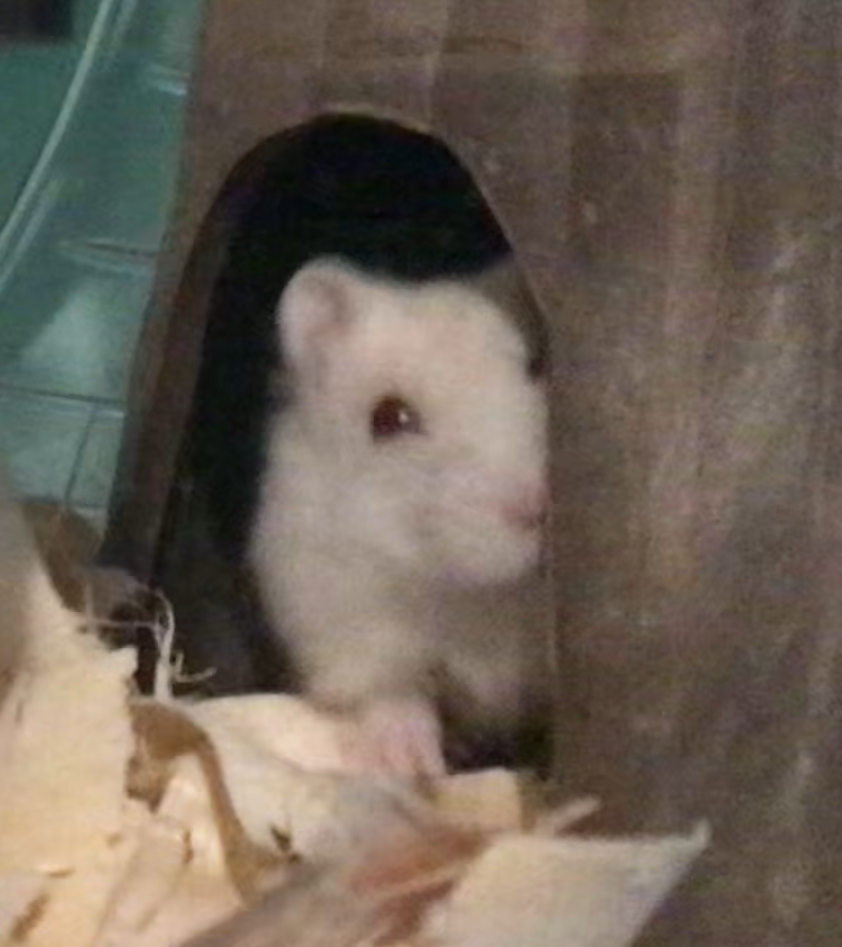

Click the image to englarge it
Spring break is here! the Trees are bursting with Flowers (and Pollen) and Pepper is doing amazing. I have spent some time observing Her behavior and I just put some Toilet Paper with my scent on it in her Cage.
It's non-harmful to Hamsters and it will help Pepper get used to me. Even though getting Pepper wasn't exactly recent; I haven't been interacting much with Her. She has been hiding in her Burrow and eating ALL her Food! anyways, thanks to the People who are viewing this article, have a good Day!
Note that the Article above is from last year. I'll keep it up until I can write new Material.UPDATE: adding pet pictures: see later
Website version: 2.0
page last updated 1:31PM EST on 4/25/26
About Us Created by Casey Alexandra Mckay-Felix 2023-2026.Email casey.mckay.felix@icloud.com for support, comments, or suggestions regarding this Website (or my Pets!)